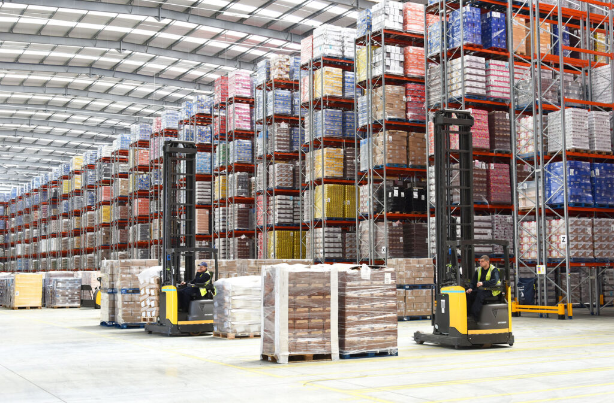

A North Carolina-based hygiene products company was facing a lot of returns, sometimes up to 15% of their sales. We were trying to find why. Using the data they provided for sales, transportation and claims we found opportunities to streamline distribution. We found that some companies ordered in smaller number of cases but more frequently, which could be causing returns. Ordering in frequent, small batches was also causing troubles at the warehouse. We were planning to devise an optimal ordering pattern for their customers, which could help the CPG company as well as their customers.
The consumer-packaged goods (CPG) company sells around 400 individual stock keeping units (SKUs) and ships 190,000 order-SKU combinations to 1000 customer locations each year. Customers can order in eaches (individual cases) or in layers, but full pallets are preferred due to the innate higher costs of handling partial pallets. There is a clear advantage is ordering in fewer pallets. It saves transportation cost to the company. Furthermore, this is also going to help the workers at the company.
We designed metrics for measuring orders measured in partial pallets, layers and eaches. Based on these metrics, we identified target rich opportunities for improvement. A large part of the project was spent in understanding the data and converting it to information.
This research project aimed to understand whether there is a benefit to changing customer order behavior, in terms of either frequency or amount ordered. Ellysa Groh and I worked under Prof Sean Willem’s guidance for this project.